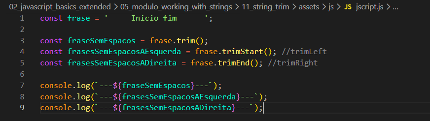

Em algumas ocasioes quando estamos lidando com inputs do usuario, iremos acabar nos deparando com casos onde pedimos para o usuario inserir uma frase com texto livre, e com isso ele pode inserir qualquer tipo de texto e entre eles pode ser espacos em branco.
Exemplo
Iremos ter o seguinte codigo como exemplo:

Agora iremos ver como podemos evitar esse tipo de situacao indesejada como espacos ao receber inputs.
No JS temos alguns metodos que nos ajudam a remover esses espacos em branco desnecessarios, alguns metodos sao: trim(), trimStart(), trimEnd()
trim()
Com ele conseguimos remover os espacos do inicio e espacos do final.
trimStart
Remove os espacos do comeco (left).
trimEnd
Remove os espacos do final (right).
Obs
O metodo trim ele nao recebe parametros ele ja tem um comportamento fixo.